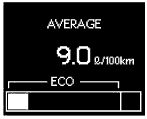

METER / GAUGE SYSTEM > DETAILS |
| OPERATING CONDITION |
Eco Driving Indicator
Eco Driving Indicator starts to operate when all of the following conditions are met:
| Condition | Engine switch is on (IG). |
| Engine is running. | |
| Shift lever is in D. | |
| Drive mode is normal. |
Eco Driving Indicator stops operation when any of the following conditions is met:
| Condition | Engine switch is off. |
| Shift lever is in any position other than D. | |
| Drive mode is in any other mode except normal. |
| FUNCTION |
Buzzer Function
The table below shows the warning and reminder functions of the multi buzzer in the combination meter assembly:
| Item |
|
Multi-information Display
The multi-information display can be switched by operating the multi-information switch located on the steering pad.
The multi-information display indicates as follows:
| Display | Outline |
| Cruise Information | In the cruise information display, 7 types of information can be displayed:
|
| Multi-function Switch* | The settings of the following systems can be changed:
|
| Warning | If necessary, the warning display and advisory display will interrupt the multi-information display immediately. |
| Customization* | The language, units, Eco Driving Indicator Light, lighting system, door lock system and power seat control system can be set up from this screen. The customization display is available only while the vehicle is stopped. If vehicle movement is detected during setup, the setup will be canceled automatically. |
The multi-information display undergoes the following transitions:
| No. | Condition |
| *1 | Conditions are met. |
| *2 | Conditions are not met. |
| *3 | Engine switch is turned on (IG). |
| *4 | Engine switch is turned off. |
Cruise Information Display
The cruise information display can be switched by operating the ENTER switch of the multi-information switch upward or downward. The counter can be reset by pressing and holding either the ENTER switch of the multi-information switch or the RESET switch of the accessory meter assembly for 0.8 seconds or more.
| No. | Condition |
| *1 | The ENTER switch is operated downward. |
| *2 | The ENTER switch is operated upward. |
| *3 | The ENTER switch or the RESET switch* is pressed and held for 0.8 seconds or more to reset the counter. |
| Display | Outline | |
| Steering Angle |
| |
| Cruising Range | Displays the value that has been calculated by the meter ECU, which is based on the fuel consumption data that the meter ECU continuously monitors and stores in its memory, and the residual fuel volume data, provided that the engine switch is turned on (IG). | |
| Average Fuel Consumption After Refueling |
| |
| Current Fuel Consumption |  | Displays the value that has been calculated by the meter ECU, which is based on the driven distance and the fuel consumption volume (fuel injection amount signal from ECM via CAN), provided that the engine switch is turned on (IG). |
| Average Fuel Consumption |  |
|
| Eco Driving Indicator Zone Display | Eco driving ratio based on acceleration is shown with a bar graph. | |
| Average Vehicle Speed |
| |
| Elapsed Time | Displays the time that has elapsed since the engine switch was turned on (IG) or since the counter was reset. | |
Multi-function Switch Display
| No. | Outline |
| *1 | The menu switch is pressed quickly (for less than 1.7 seconds) to enter the multi-function switch display. |
| *2 | Each system is switched by operating the ENTER switch upward or downward. |
| *3 | The ENTER switch is pressed to enter the Multi-terrain Select. |
| *4 | The system is turned on or off each time the ENTER switch is pressed. |
Warning Display
| Priority | Display | Master Warning Light | Multi Buzzer |
| 1 | BRAKE! | - | - |
| 2 | Warning for Collision with Vehicle Ahead | - | - |
| CRAWL HAS BEEN DEACTIVATED | Illuminates | Sounds | |
| 3 | Door Open (While Driving) | Blinks | Sounds |
| Door Open | - | - | |
| LEXUS Parking Assist-sensor System | - | - | |
| 4 | AUTO POWER OFF TO CONSERVE BATTERY | - | - |
| 5 | SHIFT TO P POSITION WHEN ALIGHTING | Blinks | Sounds |
| 6 | RELEASE PARKING BRAKE | Blinks | Sounds |
| KEY NOT DETECTED | Blinks | Sounds | |
| 7 | CLEAN RADAR SENSOR | Illuminates | Sounds |
| CRUISE CONTROL NOT AVAILABLE | Illuminates | Sounds | |
| 8 | CHECK CRUISE CONTROL SYSTEM | Illuminates | Sounds |
| CHECK PCS SYSTEM | Illuminates | Sounds | |
| CHECK STEERING LOCK SYSTEM | Illuminates | Sounds | |
| ENGINE OIL PRESSURE LOW | Illuminates | Sounds | |
| HIGH AUTOMATIC TRANSMISSION FLUID TEMP. STOP VEHICLE IN A SAFE PLACE | Illuminates | Sounds | |
| CHECK TRANSMISSION SYSTEM | Illuminates | Sounds | |
| CHECK AIR SUSPENSION SYSTEM | Illuminates | Sounds | |
| 9 | TURN POWER OFF | Blinks | Sounds |
| SHIFT TO P POSITION AND PUSH ENGINE SWITCH TO TURN POWER OFF | Blinks | Sounds | |
| KEY DETECTED IN VEHICLE | Blinks | Sounds | |
| MOONROOF OPEN | Blinks | Sounds | |
| DEPRESS BRAKE PEDAL, TOUCH ENGINE SWITCH WITH KEY | Blinks | Sounds | |
| DEPRESS BRAKE PEDAL AND PUSH ENGINE SWITCH TO START | Blinks | Sounds | |
| SHIFT TO P POSITION TO START | Blinks | Sounds | |
| 10 | STEERING LOCK ACTIVE | Blinks | Sounds |
| CRAWL NOT AVAILABLE SELECT L4 AND SHIFT TO D OR R POSITION | - | - | |
| CRAWL NOT AVAILABLE CHECK SYSTEM OPERATION CONDITIONS | - | - | |
| 11 | KEY BATTERY LOW | Illuminates | Sounds |
| ENGINE OIL LOW | Illuminates | Sounds | |
| CHECK SONAR SYSTEM | Illuminates | Sounds | |
| CLEAN SONAR | Illuminates | Sounds | |
| 12 | LOW WASHER FLUID | - | - |
| TRC OFF | - | - | |
| CRAWL IS ACTIVATED SPEED HI-MED-LO | - | - | |
| PCS TEMPORARILY NOT AVAILABLE | - | - | |
| MULTI-TERRAIN SELECT NOT AVAILABLE | - | - | |
| OPERATION NOT POSSIBLE WHEN MULTI-TERRAIN SELECT ACTIVATED | - | - | |
| MULTI-TERRAIN SELECT HAS BEEN CANCELLED | - | Sounds |
Customization Display
| No. | Outline |
| *1 | The menu switch is pressed and held (for 1.7 seconds or more) to enter the customization display. |
| *2 | The ENTER switch is operated upward or downward to switch the customization item. |
| *3 | The ENTER switch is pressed to switch the customization item and setting display. |
| *4 | The ENTER switch is operated upward or downward to change the setting. |
Eco Driving Indicator
The operating diagram of Eco Driving Indicator is as follows:
When the ECM, using information (such as vehicle speed, accelerator pedal depressed volume, shift lever position, engine speed signal (engine RPM data), shift range, drive mode, and so on), calculates that the vehicle is driven in Eco-friendly, it turns on Eco Driving Indicator Light and shows the bar graph of Eco Driving Indicator Zone Display within Zone of Eco driving.
When the ECM calculates that the acceleration exceeds Zone of Eco driving, it turns off Eco Driving Indicator Light and blinks the right side of Eco Driving Indicator Zone Display.
The operation of Eco Driving Indicator is as follows:
| Vehicle Condition | Eco Driving Indicator Zone Display | Eco Driving Indicator Light |
| Stopped | Turns off | |
| Eco Driving | Turns on | |
| Non-Eco Driving | Turns off |
Eco Driving Indicator can be deactivated in the following ways: Eco Driving Indicator Light can be deactivated from Eco Driving Indicator Light customization display of the multi-information display.
Front Seat Belt Warning Function
When the engine switch is on (IG), this system detects the condition of the seat belts based on the signals from the driver and front passenger seat belt buckle switches and the occupant detection sensor.
On the models except models for G.C.C. countries, the multi buzzer sounds when the vehicle speed exceeds 20 km/h (12.4 mph) to emphasize the fact that the seat belt is unbuckled. After 30 seconds, the sound changes for emphasis. The sound continues for 90 seconds. Once a multi buzzer begins to sound, it will continue until the seat belt is buckled or the engine switch is turned off.
On the models for G.C.C. countries, when the seat belt is unbuckled, the multi buzzer sounds 5 times 1.8 seconds after the engine switch is turned on (IG). The multi buzzer sounds when the vehicle speed exceeds 20 km/h (12.4 mph) to emphasize the fact that the seat belt is unbuckled. After 9.6 seconds, the sound changes for emphasis. The sound continues for 20 seconds. Once a multi buzzer begins to sound, it will continue until the seat belt is buckled or the engine switch is turned off.
Occupant Detection Sensor
| CONSTRUCTION |
Accessory Meter Assembly
An accessory meter assembly is used, which can show the cruise information display and air conditioning system display. The accessory meter assembly can also be used in the monitor system, wide view front and side monitor system or multi-terrain monitor system.
The display language will be the same as that set for the combination meter assembly.
| *1 | MODE Switch | *2 | RESET Switch |
| *3 | DISP Switch | *4 | Up/Down Switch |
| *5 | Clock and Outside Temperature Display | *6 | Cruise Information Display or Air Conditioning System Display |
| *7 | Driver and Front Passenger Seats Set Temperature Display | - | - |
The accessory meter assembly has the following functions:
| Function | Outline |
| Clock and Outside Temperature Display |
|
| Driver and Front Passenger Seats Set Temperature Display | Displays the air conditioning set temperature for the driver and front passenger seats. |
| Cruise Information Display | In the cruise information display, 5 types of information can be displayed:
|
| Air Conditioning System Display | Displays the status of the air conditioning system. |
| Screen Adjustment Display | The following adjustments can be made:
|
| Monitor System Display | The image of each system is displayed. |
| Wide View Front and Side Monitor System Display | |
| Multi-terrain Monitor System Display |
The display of the accessory meter assembly undergoes the following transitions:
| *1 | Air conditioning system is operated | *2 | Mode switch is pressed or no operation is performed for 6 seconds |
| *3 | DISP switch is pressed | *4 | No operation is performed for 10 seconds |
| *5 | Each system starts operating | *6 | Each system finishes operating |
| *a | See the following illustration for the display transitions of this component | - | - |
| *1 | MODE switch is pressed | *2 | RESET switch is pressed and held (for 0.8 seconds or more) to reset the counter |
| FAIL-SAFE |
Eco Driving Indicator
When any of the following conditions are met, Eco Driving Indicator Light is turned off and Eco Driving Indicator Zone Display is stopped: